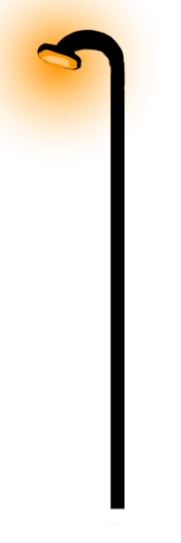

日記コーナー！随時更新していくよん
2026/11/24
今日は、最近ハマっている音楽を振り返っていこうと思います！正直あげるとキリがないので、少し絞って。一曲目！デ・ジ・キャラットより「PARTY☆NIGHT」
この曲、最近とある方の歌ってみたで知ったんですが、めちゃくちゃ好き！明るい曲調の中に、心に寄り添ってくれる部分も背中を押してくれる部分もあって（辛い時にも気分上げたい時にもどっちでも聞けて良き、カラオケで歌っても楽しい）みたことない平成アニメの曲ですが、アニメの方も見てみたくなりました。昔のアニメだからかどこで見れるのか分からずじまいで止まっていますが( ;ㅿ; )
二曲目！Suspended 4thより「ストラトキャスター・シーサイド」
今まで主、ベースがなんで必要かあまり分かってなかったんですけどこの曲を聞いてわかりました。ほんっとうににベース（特に前奏）がかっこいいし、その他ギタードラムの技術もすごいんです！
三曲目！BONEWORKSより「Michael Wyckoff - Ambient Travel」
とある方の動画で知って世界観に心臓を掴まれました。Boneworks OSTの収録曲は一通り聞いたんですがどれも素敵でした。詳しくはないのですが、主も最近聞いているドリームコア？系の世界観が好きな人はかなりハマる人多いんじゃないかなって思います。
ゲーム楽曲だと他にも、ICOより「Castle In The Mist」という曲も大好きです。ゲーム機がないのでプレイできないんですけど、逃避行っていう言葉にぴったりだなって感じます。本当に聴いてみてほしい曲です。
最後！いのうつはSAさんより「溺死して死ね」
最近知ってずっと聞いてるんですけど、曲名故になかなか人に紹介できない曲！まず映像が好き、この方特有の曲調も好きで、歌詞も好きです。少し自分語りになってしまうんですが、主は過去の楽しかった、幸せだった記憶を思い出すたびずっと苦しい時期があったんですよね（今もだけど）。当時はなんてことない日常でも、二度とおこりうらなくなった瞬間かけがえのないものになってしまったみたいな。（正直苦しかった思い出以上に楽しかった思い出の方が胸を苦しめてた）そんな中この曲が自分の思考を少しだけ変えてくれて。あの頃に戻りたい、やり直したいって考えるんじゃなくて私の中で一つのキラキラの宝物として忘れずに覚えておこうって思ったんですよね。（最後の歌詞の影響かな）とにかく、曲名で疎遠するには勿体無い曲なのでぜひ聞いてみてください！
とりあえず今ハマってる曲はその辺りです。こうやって今後もたまに好きなもの記録してこうと思います!
2026/11/23
本日は新しいものをたくさん見れました！！写真サイトの方にも載せましたが、豪華客船が横浜に来てたんです。あすかっていうかなり有名な船だったみたいなんですが、すっごく綺麗で今まで想像していた以上に大きかったです。人生のうちに一度ぐらいは乗ってみたいなと思いました。サンライズ瀬戸と豪華客船は絶対死ぬまでに一度は乗る。本当は今日のことを飽きるまで書き綴りたいんですが、もう眠いのとスペース的にも厳しいので、今度訪問記録的な感じでページを作ろうかなって思います（ブログっぽくて楽しそう！！）
そういえば最後に、こちらの日記サイトと写真サイトをURLが知らない方でもみれる設定に変更しました！まだまだ拙いサイトですが、もし訪れた方がいたら温かい目で見ていってくださると嬉しいです。となるともっといろんなことこだわって、説明欄とかもわかりやすくしたいな。あ〜やりたいことがたくさんあって楽しみ！
2026/11/22
本日は少し遠出をしにきています。やはりどこにいてもお空が綺麗なのは変わりませんね。本日のお空はミントグリーンと優しいオレンジが綺麗に混ざり合っていてとても素敵で、デジカメで捉えたかったんですがなかなかそのままの色合いが写真にならず苦戦していました( ˊᵕˋ ; )
そういえばサイト作成の経過報告ですが、ギットハブ（サイトを公開するやつ）とVS（コードを書くやつ）を連携するのに手間取っていて、毎回更新するのが少し手間がかかってるんですよね（どこかで解決したいです）。あとは日記ページの背景色、現在迷っているんですが綺麗なグラデーションにしたいと考えています（あとは鉱物のコレクションとか好きなものまとめるコーナーも作りたいし、もっとデザインもこだわりたいです）お楽しみに〜

見てください〜！フォトショップで練習にネオンライプをタッチスパットで描いてみました。むずかしかった(~ω~；)。 けど、初めてにしてはうまくできた方じゃないですかね。ついでにこのページの背景色なんかも変えてみました！（個人的に結構好きな配色になって嬉しい。もう少し空っぽくできるよう今後も調整予定）
2026/11/21
朝４時に目が覚めました！ここまで早起きだとよくないんじゃないかとも思うんですが、早朝の家族がまた寝ている静かで真っ暗時間帯って落ち着くというか、勉強も捗るのでまあいいかなって感じですね。
偶然知ったんですが、最近よく聞くQOLの正式名称ってクオリティオブライフらしいです。しかも面白いのが、Wikipediaによると規律性の高い生活を送った人の方が長生きする傾向があっても、規律性が低い人に比べてQPLが低くなるかもみたいなんです（信憑性は低いかもだけど）。確かに毎日規則的に真面目な生活を送ってる人よりも、友達とオールしたり、毎日楽しそうにしてる人の方が幸せなのかもしれません（幸せの基準なんて人それぞれだけど、少しずつちょっとした刺激はあっても良い的な？）
本日はお外にお出かけに行ってきました！ふっふっふ。素晴らしいものを買ってきたのでご報告させていただきます。11/18~11/30の間、ジュンク堂本店で鉱物の展示販売してたんですよ、ラッキー。そこで、気に入ったものを買ってきちゃいました〜！

すべすべで冷たくて、オレンジみたいな色合い。触っても見てても癒されます。カルサイトという鉱物で、すっごく割れやすくて綺麗な菱形に割れる特徴があるそうです、流石に割る勇気はないけど。いやーずっと鉱物ショップとかで見かけて気になってたので、買えてよかったです！この他にも豚肉石とかテレビ石とか化石まで！見ててすっごく楽しかったので機会がある方は行ってみてください！
おそらく今、昨日から作ってた日記ページが写真ページと連携されて皆さんからも見えるようになったと思うのでなんとか寝る前に一仕事着いてよかったです。明日は毎度vs codeとギットハブを行き来するのめんどくさいので連携させるのと、デザインの調整、サイトを検索で出てくるようにしたいです。おやすみなさい〜
2026/11/20
一日目！2ページも無事作成できて、こうやってやりたいことを形にできてくると、ついに主もプログラマーに一歩近づいたのかな？と嬉しくなってきます。話は変わりますが、このサイトもそうですし、写真サイトの方を作るときも忘れずに意識していることがあります。それは、「主にとって綺麗だったり大切なものをどんどん詰め込むつもりで作る！です」綺麗な写真や、一般論じゃなくて自分にとって好きな色、そういうものを詰め込んでいくと、サイトが宝箱のようなドロップス缶のような大好きな形になっていって、見ていてとても楽しくなってきます。まあですので、偶然訪れた方も気が向いた時にサイトの状態を見ていただけると、大切なものを共有できる気がして主もとても嬉しいです、現時点ではまだurl知ってる人しか見れない設定にしてますが。本日の話は以上！最近寒いので皆さんもあったかくしてお早めにお休みください〜